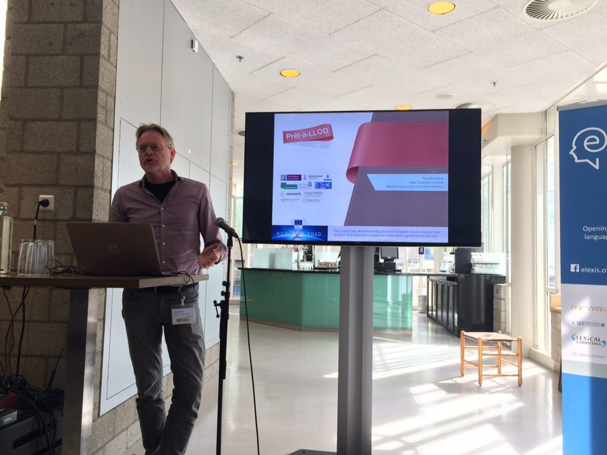

written by Paul Buitelaar on
Paul Buitelaar presented an overview of Pret-a-LLOD at a workshop on eLexicography between Digital Humanities and Artificial Intelligence that was collocated with the Digital Humanities 2019 conference in Utrecht, the Netherlands.
